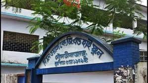
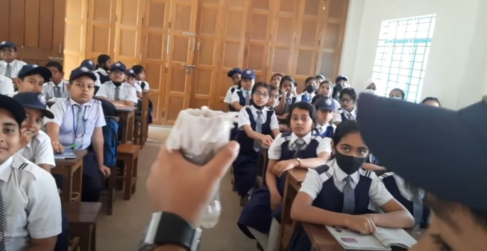

The Flowers K.G. and High School is a very popular and famous school all over the Sylhet division. It is situated in the Court Road of Moulvibazar. The school was established in the 5th May of 1979. Before getting established, it was a prison. The uniform of the school is coloured White and Blue. There are 1800 students and 65 teachers in the school. It has 5 academic buildings in the campus. Every season, students earn meritoriuos results and pass. Our school arranges an annual sports competition and cultural event. Here are some activities of me:| My science project on water filter.Some fun besides classes with friends:] Here is a documentary by the Batch 2k25 of the school: